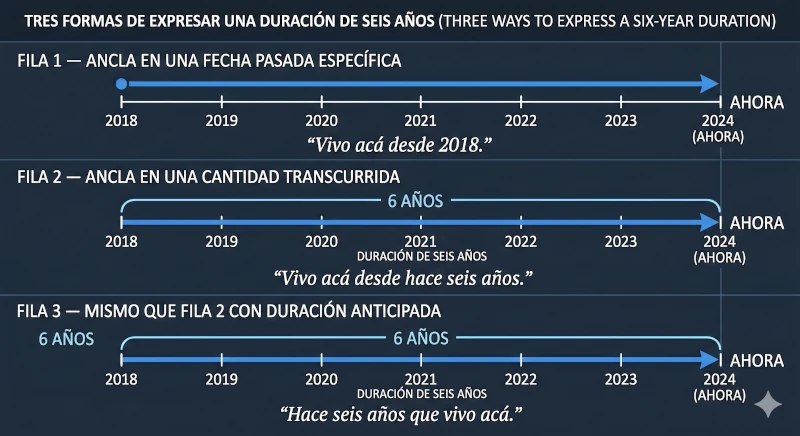
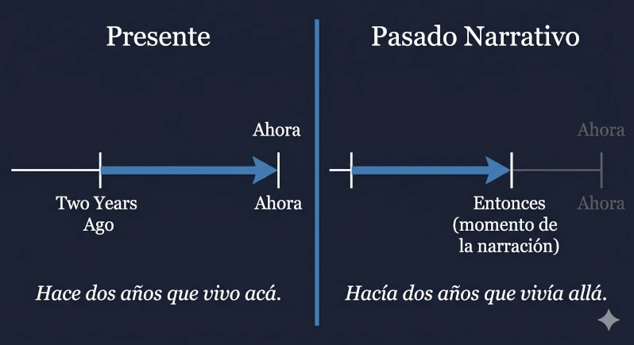
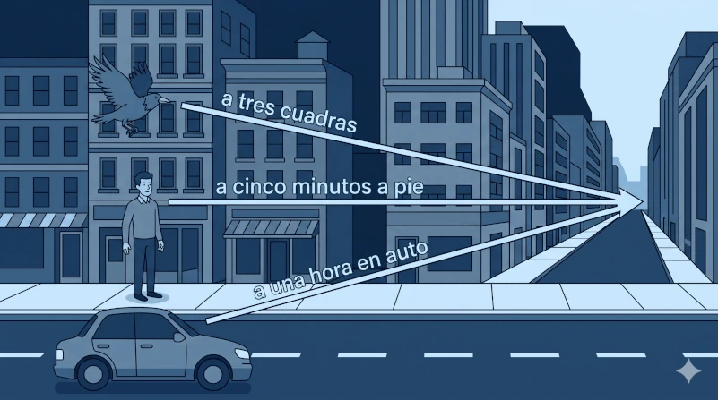

El español trata el tiempo y la distancia como una misma medida. Decimos está a tres cuadras,
está a cinco minutos y está a una hora en auto usando la misma estructura. Esta página
recorre las construcciones de duración y distancia, marcando dónde la simetría se sostiene y dónde se rompe.

NOTA*
This page is built around one observation: Spanish often expresses time and distance through the same structural
frame — estar a + amount works for physical distance, time-as-distance, and hybrids. Question forms
mirror across the two domains (¿A qué distancia? · ¿A cuánto tiempo? · ¿Cuánto falta?).
Read the Spanish narrative for the constructions; these NOTA boxes flag the mechanical points where English and
Spanish diverge.
Cotidiano
Mostrar todo
Velocidad 🔊
Cómo el español expresa la duración
El español dispone de varias construcciones para hablar de duración, y cada una ilumina un ángulo distinto:
cuánto tiempo pasó desde un punto, cuánto tiempo lleva ocurriendo algo en
este momento, cuánto falta para que algo termine, y cuánto tiempo sin que
algo ocurra. Las secciones que siguen recorren estas construcciones en ese orden. La mayoría conviven en el
habla cotidiana; algunas son más propias del registro literario o periodístico y se marcan como tales.
NOTA*
Spanish handles duration through several angles: elapsed time (how long ago),
ongoing time (since when / for how long it's been happening), remaining time
(how much longer), and negative duration (how long without). The sections on this tab cover
all four. The biggest shift from English is that Spanish typically uses the simple present where English
uses the present perfect: Vivo acá desde hace seis años = "I have lived here for six years."
Desde + presente
La construcción más directa del grupo: desde seguido de un punto fijo en el tiempo —
una fecha, un mes, un evento — marca el momento en que algo empezó. El verbo se queda en
presente porque la acción sigue ocurriendo ahora. El inglés, en cambio, exige el
presente perfecto en este mismo contexto: I have lived…
Vivo acá desde 2018.
I've lived here since 2018. — Punto fijo: el año en que empezó la acción.
Trabajo en el hospital desde marzo.
I've worked at the hospital since March. — Punto fijo: el mes; el verbo sigue en presente.
No comemos carne desde el año pasado.
We haven't eaten meat since last year. — Forma negativa; misma estructura.
¿Estudiás español desde la pandemia? Rioplatense
Have you been studying Spanish since the pandemic? — Voseo: estudiás en lugar de estudias.
NOTA*
The big shift from English: Spanish keeps the verb in simple present, where English forces
the present perfect ("have lived / have worked / have been studying"). Same time relationship, different
tense. The desde phrase carries all the temporal weight; the verb just states the ongoing state.

Desde hace + presente
El segundo molde toma el mismo eje temporal pero lo expresa de otra forma: en lugar de un punto fijo,
desde hace introduce la cantidad de tiempo que ha pasado desde el inicio de
la acción. El verbo se mantiene en presente. Es probablemente la construcción más usada para hablar
de duraciones en español hablado.
Vivo acá desde hace seis años.
I've lived here for six years. — Cantidad transcurrida, sin fecha de inicio.
Conozco a Marta desde hace mucho tiempo.
I've known Marta for a long time. — Cantidad imprecisa pero válida.
Mi madre trabaja en ese banco desde hace veinte años.
My mother has worked at that bank for twenty years. — Verbo en presente aunque la acción empezó hace mucho.
NOTA*Desde vs. desde hace: same construction, two ways to fill the slot.
Desde 2018 = a fixed point on the calendar. Desde hace seis años = the amount of time
that has elapsed. They cover the same situation from different angles, and which one you reach for
depends on whether you know the start date or just the duration.
Hace + tiempo + que + presente
Misma idea que la anterior pero con la información reordenada: el tiempo transcurrido
se pone primero, seguido de que y el verbo en presente. Es una construcción muy frecuente en
el habla y permite enfatizar la duración al ponerla al principio de la frase.
Hace seis años que vivo acá.
It's been six years since I moved here / I've lived here for six years. — Mismo significado que «vivo acá desde hace seis años», con la duración fronted.
Hace dos horas que espero la llamada.
I've been waiting for the call for two hours. — Énfasis en lo largo que se ha hecho la espera.
¿Hace cuánto que estudiás español? Rioplatense
How long have you been studying Spanish? — Forma de pregunta natural en cualquier registro; voseo en estudiás.
NOTA*Hace seis años que vivo acá and vivo acá desde hace seis años mean the same thing —
just different word order. The hace … que version fronts the time, which tends to feel more
emphatic. In English both land naturally as "I've lived here for six years" or
"It's been six years since…"
Hace + tiempo + que no + presente
Versión negativa de la construcción anterior. Mantiene la misma forma pero introduce no
antes del verbo: marca cuánto tiempo ha pasado sin que algo ocurra. En inglés
corresponde a "I haven't … in / for …".
Hace tres años que no lo veo.
I haven't seen him in three years. — Negación de la acción durante el período indicado.
Hace meses que no recibo noticias suyas.
I haven't heard from him/her in months. — «Meses» como cantidad imprecisa.
Hace mucho que no como tan bien.
I haven't eaten this well in a long time. — «Mucho» abreviado de «mucho tiempo».
NOTA*
The verb stays in simple present even though English reaches for the present perfect
("I haven't seen"). Same tense pattern as the positive version — only no is added.
Note that hace mucho (without tiempo) is a fixed shorthand for hace mucho tiempo.
Hacía + tiempo + que + imperfecto
El espejo de la construcción anterior en el pasado narrativo. Hacía reemplaza a hace,
y el verbo se mueve del presente al imperfecto. La estructura es idéntica; lo único
que cambia es el tiempo verbal. Esta forma expresa cuánto tiempo llevaba ocurriendo algo
en un momento del pasado, típicamente apuntando hacia otro evento ya situado en la narración.
Hacía dos años que vivía allá cuando me cambié de trabajo.
I had been living there for two years when I changed jobs. — El anclaje es el momento del cambio de trabajo, no el ahora.
Hacía mucho tiempo que no nos veíamos.
We hadn't seen each other in a long time. — Versión pasada de «hace mucho tiempo que no nos vemos».
Hacía meses que esperaba esa noticia cuando finalmente llegó.
I had been waiting months for that news when it finally arrived. — Anclaje doble: la llegada de la noticia fija el momento de referencia.
NOTA*
The shift from hace to hacía
In present-anchored duration, hace sets a relationship between an action and the moment of
speaking — hace seis años que vivo acá describes a stretch of time extending up to now.
Hacía moves the entire anchor one tense back: hacía seis años que vivía acá
describes a stretch of time extending up to some moment in the past. The "now" of
the construction is no longer the present; it's a past reference point the narrative has already set up.
Identical construction, shifted tense
The mechanical structure is the same in both versions:
hace + tiempo + que + presente
hacía + tiempo + que + imperfecto
The hace/hacía swap pulls the verb tense with it — present indicative becomes
imperfect. Word order, the role of que, everything else stays put.
Where this form lives
The past-anchored version almost always appears alongside another clause that fixes the moment of
reference — typically a preterite (cuando me mudé · cuando llegué · cuando empezó la pandemia).
Without that anchor the construction floats; in isolation it sounds like the sentence is missing
something. English does the same work with the past perfect continuous: "I had been living…",
"we hadn't seen each other in…"
Desde + imperfecto
La contraparte pasada de desde + presente. Funciona igual — un punto fijo en el tiempo marca
el inicio de la acción — pero el anclaje se mueve al pasado y el verbo va en imperfecto.
Como la construcción anterior, vive sobre todo en contextos narrativos donde otra cláusula establece el
momento de referencia.
Vivía allá desde el 2010 cuando empezó todo.
I had been living there since 2010 when it all started. — Punto fijo en el pasado; el imperfecto marca la situación en curso.
Trabajaba en esa empresa desde 1998; ya tenía mucha antigüedad.
I'd been working at that company since 1998; I had a lot of seniority. — Sin cuando, pero con una segunda cláusula que da contexto.
Estudiaba español desde la secundaria, así que ya tenía bastante base.
I'd been studying Spanish since high school, so I had a solid base. — Punto fijo expresado como evento (la secundaria) en vez de fecha.
NOTA*
The relationship between desde + presente and desde + imperfecto is the same as
between hace que + presente and hacía que + imperfecto: the whole anchor shifts
from present to past, and the verb tense moves with it. The starting point can be a date, a year,
a month, or a generic event in the past (la secundaria · la pandemia · la guerra).
Hace + tiempo (sin que)
Hasta aquí hemos visto hace como parte de construcciones con que y un verbo en
presente. Pero hace + cantidad de tiempo también funciona solo, como
marcador puntual: equivale al inglés "X ago". Sin que y normalmente acompañado
de un verbo en pretérito o imperfecto, no expresa duración ongoing; apunta a un momento
del pasado.
Lo vihace una semana.
I saw him a week ago. — Pretérito + hace = momento puntual en el pasado.
Llegué a Buenos Aires hace dos meses.
I arrived in Buenos Aires two months ago. — Misma estructura: pretérito + cantidad de tiempo.
Hace mucho tiempo, vivía en Chile.
A long time ago, I lived in Chile. — Forma fronted; el imperfecto da el contexto de "back then".
—¿Cuándo te mudaste? —Hace tres años.
"When did you move?" "Three years ago." — Respuesta independiente; el contexto da el verbo implícito.
NOTA*
Same word, different mechanism. Hace tres años que vivo acá (with que
+ present) = "I've been living here for three years" — ongoing. Vivía acá hace
tres años (no que, past verb) = "I was living here three years ago" — a snapshot of
a past moment. The presence or absence of que and the verb tense are the two markers that
tell these apart.
Llevar + tiempo — cuatro construcciones
Llevar + tiempo es una de las formas más versátiles que tiene el español para hablar de
duración. Lo que cambia entre las cuatro variantes es qué ocupa el segundo hueco —
un gerundio, un infinitivo, un infinitivo precedido de sin, o un objeto indirecto con
llevar en pretérito. Cada combinación produce un significado distinto.
Llevar + tiempo + gerundio
Expresa cuánto tiempo lleva alguien haciendo algo. El sujeto de llevar
es la persona que realiza la acción; el gerundio describe lo que viene haciendo.
Llevo dos horas estudiando.
I've been studying for two hours. — «Yo» es el sujeto de llevar; el gerundio dice qué hago.
Llevamos tres meses esperando esa respuesta.
We've been waiting three months for that answer. — Plural; la acción sigue en curso.
¿Cuánto tiempo llevás trabajando acá? Rioplatense
How long have you been working here? — Voseo: llevás en lugar de llevas.
NOTA*
Mechanically equivalent to hace X que + presente (hace dos horas que estudio),
but llevar + gerundio tends to feel a touch more conversational and is heavily used in
spoken Spanish.
Llevar + tiempo + infinitivo (impersonal)
Misma forma de superficie, perspectiva invertida: ahora el sujeto es la tarea, no
la persona. Llevar deja de ser personal y pasa a significar "tomar/requerir" en
sentido impersonal.
Solo lleva diez minutos rellenar el formulario.
It only takes ten minutes to fill out the form. — El formulario (implícito como sujeto) es lo que «lleva» el tiempo.
Lleva tiempo aprender un idioma.
Learning a language takes time. — Sentencia general, sin objeto específico.
Esa receta lleva dos horas hacerla bien.
That recipe takes two hours to do right. — Sujeto explícito (la receta) en posición fronted.
NOTA*
The flip is subtle but important: in variant 1 the subject is the person and the gerund tells you
what they're doing; here the subject is the task and the infinitive tells you what action takes
the time. English handles both with "takes" but uses different syntax: "I've been studying for
two hours" vs. "it takes two hours to study."
Me / te / le llevó + tiempo
Misma perspectiva que la variante anterior (la tarea es el sujeto) pero con un objeto
indirecto que ancla a quién le tomó ese tiempo, y con llevar en
pretérito. Cuenta una duración ya completada.
Me llevó una hora terminar el informe.
It took me an hour to finish the report. — «Me» = objeto indirecto; pretérito completado.
Le llevó tres meses encontrar trabajo.
It took him three months to find a job. — «Le» referencia a otra persona; mismo molde.
Nos llevó toda la tarde ordenar la casa.
It took us the whole afternoon to tidy the house. — «Nos» plural; expresión de tiempo no numérica.
NOTA*
This is the past-tense, person-marked version of variant 2. Spanish marks the experiencer with an
indirect object pronoun (me · te · le · nos · les) rather than turning it into the subject,
which is why llevar stays in the third person singular regardless of who experienced the time.
Llevar + tiempo + sin + infinitivo
La variante negativa: sin + infinitivo reemplaza al gerundio de la variante 1 y marca
cuánto tiempo lleva alguien sin hacer algo. Equivale exactamente a
hace X que no + presente, que ya vimos en la sección 4.
Llevo dos años sin verlo.
I haven't seen him in two years. — Equivalente a «hace dos años que no lo veo».
Lleva semanas sin contestar los mensajes.
He's gone weeks without answering messages. — Tercera persona; mismo molde.
Llevamos meses sin hablarnos.
We haven't talked in months. — Plural; el pronombre reflexivo va pegado al infinitivo.
NOTA*
Two ways to say exactly the same thing — llevo dos años sin verlo and hace dos años
que no lo veo. The llevar version puts the subject (the person) up front;
the hace que version puts the duration up front. Both are equally natural in conversation.
Tardar / Demorar + (en) + infinitivo
Para hablar de cuánto tarda en pasar algo, el español usa dos verbos prácticamente
intercambiables: tardar y demorar. La construcción es la misma —
verbo + cantidad de tiempo + (en) + infinitivo — y la elección entre ambos verbos es
cuestión de región. La preposición en se omite a veces cuando la acción está clara por
contexto.
El tren tarda media hora en cruzar la ciudad.
The train takes half an hour to cross the city. — Forma completa con en + infinitivo.
Me demoré dos horas en terminar el informe.
It took me two hours to finish the report. — Pretérito con pronombre reflexivo; «demorarse» es una variante reflexiva común.
¿Cuánto tarda en llegar el pedido?
How long does the order take to arrive? — Forma de pregunta con tardar.
¿Cuánto demora el colectivo? Rioplatense
How long does the bus take? — Demorar + colectivo, ambos rasgos típicos del Río de la Plata.
NOTA*Tardar and demorar mean essentially the same thing in this construction. Spain
and Mexico lean strongly toward tardar; the Southern Cone (Argentina, Uruguay, Chile)
leans toward demorar; most of South America uses both. Either is understood everywhere.
The reflexive demorarse (and to a lesser extent tardarse) is very common in spoken
Spanish across Latin America.
Faltar + tiempo
El espejo de hace: en lugar de marcar tiempo transcurrido, faltar marca
tiempo que queda. Se usa impersonalmente o con objeto indirecto, casi siempre
acompañado de para (cuánto falta para algo) o para que (cuánto falta para que
ocurra algo).
Faltan veinte minutos para que empiece la película.
Twenty minutes until the movie starts. — Impersonal: el sujeto gramatical es «veinte minutos».
Me faltan cinco minutos para terminar.
I have five minutes left to finish. — Con objeto indirecto «me»: la persona afectada por el tiempo que falta.
—¿Cuánto falta? —Falta poco.
"How much longer?" "Not much longer." — Forma standalone muy común; «poco» implícito de «poco tiempo».
NOTA*
Same verb appears later in the Distancia tab — ¿cuánto falta para llegar? = how much
further to go? — which is one of the cleanest illustrations of why this page exists: the same
construction handles time remaining and distance remaining without changing shape.
Aproximaciones y hedges
Cuando no se sabe el tiempo exacto, o cuando no hace falta ser preciso, el español ofrece varias
formas de «redondear». Lo importante es que existen dos registros con expresiones
distintas: lo que se dice entre amigos no es lo que se escribe en un documento oficial. Si tienes
el switch en Cotidiano, las opciones formales de abajo se ocultan.
Cotidiano
Las formas que se usan en conversación normal — sueltas, conversacionales, a veces redundantes
(decir más o menos después de un número aproximado es muy común).
La reunión dura como dos horas.
The meeting lasts about two hours. — «Como» + cantidad = aproximación rápida.
Llegamos a eso de las tres.
We arrived around three. — «A eso de» se usa con horas específicas.
Faltan unos diez minutos, más o menos.
About ten minutes left, more or less. — «Unos/unas» antepuesto al número + «más o menos» reforzando: muy típico.
Algo así como una hora, no más.
Something like an hour, no more. — Hedge fuerte; transmite incertidumbre.
Formal
Las formas que aparecen en documentos, comunicados, prensa, ámbitos profesionales. Son más
neutras y precisas; se evitan las redundancias del registro cotidiano.
La sesión durará aproximadamente dos horas.
The session will last approximately two hours. — Adverbio formal estándar.
El procedimiento toma alrededor de quince minutos.
The procedure takes around fifteen minutes. — «Alrededor de» + cantidad.
La conferencia se prolongará en torno a tres horas.
The conference will run in the neighborhood of three hours. — «En torno a» es marcadamente formal; típico de escritura periodística o académica.
El acto concluirá cerca de las seis de la tarde.
The event will end close to six in the evening. — «Cerca de» funciona en ambos registros, pero combinado con sintaxis formal pertenece aquí.
NOTA*
The split between these two registers matters more in writing than in speech. A cotidiano hedge in
a formal document reads as careless; a formal hedge in casual conversation reads as stilted.
Cerca de is the most register-flexible of the bunch — it works in both contexts depending
on the surrounding syntax. En torno a is the most strongly marked as formal and almost
never appears in spoken Spanish outside of news anchors.
Formas de pregunta
Cuatro formas de preguntar sobre el tiempo, cada una pareja de una de las construcciones que
cubrimos antes. La elección de la pregunta condiciona la forma natural de la respuesta.
¿Cuánto tiempo dura la película?
How long is the movie? — La más general; combina con casi cualquier verbo de duración.
¿Hace cuánto te mudaste?
How long ago did you move? — Pareja con hace + tiempo (bare): «me mudé hace tres años».
¿Desde cuándo estudias español?
Since when have you been studying Spanish? — Pareja con desde + presente: «desde 2020».
¿Desde hace cuánto trabajás en el hospital? Rioplatense
How long have you been working at the hospital? — Pareja con desde hace + presente; voseo en trabajás.
NOTA*
Each question form points to a different answer construction. ¿Cuánto tiempo? is the
safest fallback when you're not sure which one fits — it works with most verbs of duration.
¿Hace cuánto que…? (with que + present) asks about ongoing duration;
¿Hace cuánto…? (no que, past verb) asks about a punctual moment in the past.
Same split we saw in section 7.
La distancia funciona igual que el tiempo
La distancia en español comparte la misma maquinaria que el tiempo: la construcción central
estar a + medida acepta unidades físicas (cuadras, kilómetros), de tiempo (minutos),
e incluso híbridas (una hora en auto). En esta pestaña aparecen las construcciones específicas
de distancia, pero la mayoría son simplemente las que ya vimos en Tiempo aplicadas a otro
tipo de medida.
NOTA*
If you've worked through the Tiempo tab, you've already met most of the apparatus on this side.
Estar a + X covers physical distance, time-as-distance, and hybrid units without changing
shape. Faltar reappears with identical mechanics. The hedge vocabulary (como, más o
menos, aproximadamente) is verbatim shared. What's genuinely new is a small set of
distance-specific verbs (quedar, acercarse, alejarse) and a few question forms that
have no clean time equivalent (¿Qué tan lejos?, ¿Cómo de lejos?).

Estar a + medida — la construcción central
Esta es la pieza que une las dos pestañas. Estar a + medida acepta cualquier tipo de
unidad — física, temporal o híbrida — sin cambiar de forma. La preposición a es fija
y no varía según el tipo de medida que la siga.
Distancia física
Unidades de espacio: cuadras, metros, kilómetros, millas.
El supermercado está a tres cuadras.
The supermarket is three blocks away. — Cuadras: unidad urbana en gran parte de Lat-Am.
La playa está a diez kilómetros.
The beach is ten kilometers away. — Cantidad mayor; misma estructura.
Tiempo como distancia
Cuando lo que importa es cuánto se tarda en llegar, el español usa unidades
de tiempo en el mismo molde. La construcción no cambia.
El restaurante está a cinco minutos.
The restaurant is five minutes away. — Sin medio de transporte explícito; se asume caminando o el contexto lo aclara.
La estación está a quince minutos caminando.
The station is fifteen minutes on foot. — Medio de transporte agregado con gerundio.
Híbrida — tiempo + medio de transporte
Combinación de unidad temporal con medio de transporte explícito. La construcción sigue siendo
estar a + tiempo; lo que cambia es la cola que indica cómo se mide ese tiempo.
El aeropuerto está a una hora en auto.
The airport is an hour by car. — «En auto» especifica el medio.
La cabaña está a media hora en colectivo. Rioplatense
The cabin is half an hour by bus. — «Colectivo» = bus, rioplatense; mismo molde.
NOTA*
The a in this construction is fixed; it doesn't shift with the unit. Spanish treats
space and time as fundamentally the same kind of measurement here — the slot after estar
a can take any unit. This is the structural heart of why this page exists. English needs
three different constructions (three blocks away · five minutes away · an hour by car);
Spanish uses one.
Quedar a + medida
Quedar reemplaza a estar cuando hablamos de la ubicación establecida
de algo — un edificio, un comercio, un punto fijo en el mapa. La construcción es idéntica;
solo cambia el verbo.
La farmacia queda a dos cuadras.
The pharmacy is two blocks away. — Mismo significado que «está a dos cuadras» pero con quedar.
El museo queda a una hora del centro.
The museum is an hour from downtown. — Quedar a + tiempo: tiempo como distancia.
¿Por dónde queda tu casa? Rioplatense
Whereabouts is your place? — Variante de pregunta muy común en el Río de la Plata.
NOTA*Quedar for location is heavily Lat-Am preferred. Spain leans on estar for the
same meaning. Within Lat-Am, both verbs are used; quedar tends to feel more natural
for established locations (stores, buildings, neighborhoods), and estar for transient
or movable subjects (a person, a vehicle). Many speakers use them interchangeably.
Cerca de / lejos de
Cuando no importa la medida exacta sino la relación entre dos puntos, el
español usa cerca de y lejos de. Combinan con estar o quedar
indistintamente y aceptan modificadores de intensidad: muy, bastante, no muy.
El parque está cerca de mi casa.
The park is close to my house. — Posición relativa, sin cantidad concreta.
Queda lejos del centro.
It's far from downtown. — Quedar + lejos de + punto de referencia.
La universidad no queda muy lejos.
The university isn't too far. — «No muy» suaviza la distancia percibida.
NOTA*
Different from estar a + medida: these don't specify a distance, they place two points
in relative position. They take modifiers freely (bastante cerca, muy lejos, no muy lejos)
and chain naturally with de + reference point. When you don't know the distance — or
when it doesn't matter — these are what you reach for.
A + medida + de
Combina a + medida (la distancia) con de + punto de referencia (el origen).
Es la forma productiva para decir «X está a tal distancia desde Z». Cualquier
unidad funciona, cualquier referencia funciona.
El hotel está a tres cuadras del centro.
The hotel is three blocks from downtown. — Medida + de + referencia: la combinación más usada.
Mi oficina queda a diez minutos de la estación.
My office is ten minutes from the station. — Unidad temporal en el mismo molde.
Estamos a 100 metros de la playa.
We're 100 meters from the beach. — Pronombre sujeto: «nosotros estamos»; misma estructura.
NOTA*
This is the construction for "X is Y distance/time from Z." Highly productive — any unit, any
reference. The same template handles geographical statements (Madrid está a 600 km de
Barcelona), commute descriptions (vivo a quince minutos del trabajo), and giving
directions (a tres cuadras del semáforo).
Faltar + distancia
El mismo verbo que vimos en Tiempo, aplicado al espacio. Faltar marca
cuánta distancia queda por recorrer. Como con el tiempo, se usa impersonalmente
o con objeto indirecto, y la respuesta puede venir en unidades físicas, temporales, o ambas.
¿Cuánto falta para llegar?
How much further? — Pregunta clásica del viaje; respuesta abierta.
Faltan dos cuadras y llegamos.
Two more blocks and we're there. — Respuesta en unidad física.
Me faltan cinco minutos para llegar.
I have five minutes left to get there. — Respuesta en unidad temporal; con objeto indirecto.
NOTA*
Same verb as in Tiempo section 10. The distance use is typical mid-journey: someone driving,
walking, or commuting asks ¿cuánto falta? and the answer can come in distance units,
time units, or both. This is the cleanest illustration of the page's thesis — one verb, one
question, two interchangeable kinds of answer.
Verbos de aproximación y alejamiento
Los verbos que implican cambio de distancia: alguien o algo se mueve hacia un
punto (acercarse a, aproximarse a, dirigirse a) o se aleja de uno (alejarse de).
Todos son reflexivos en este uso.
Nos estamos acercando al centro.
We're approaching downtown. — Forma reflexiva + a + destino; gerundio para acción en curso.
Se alejaron de la costa durante la tormenta.
They moved away from the coast during the storm. — Alejarse de + origen; pretérito.
El auto se aproxima al cruce.
The car is approaching the intersection. — Aproximarse es más formal que acercarse.
Nos dirigimos hacia el norte.
We're heading north. — Dirigirse implica intención; «hacia» en lugar de «a» es muy común con este verbo.
NOTA*
Register notes: acercarse and alejarse are everyday vocabulary;
aproximarse is noticeably more formal (typical in news, navigation, and written
Spanish); dirigirse implies intent and is used both physically (dirigirse a
casa) and figuratively (dirigirse al público, dirigirse a alguien).
Por + zona
Cuando la ubicación exacta no importa, el español usa por + zona para indicar una
zona general sin compromiso de precisión. Es heavily cotidiano y muy común en
conversación cuando se da una referencia aproximada.
Eso queda por el centro.
That's somewhere downtown. — Zona aproximada, no ubicación exacta.
Vive por San Telmo. Rioplatense
He/she lives over in San Telmo. — Barrio porteño; «por» da una localización de barrio sin dirección exacta.
El restaurante está por allá.
The restaurant is over that way. — «Por allá» = vaga dirección, no precisión.
NOTA*
Not a precise distance construction — that's the point. Por + zone gives a vague "in
the area of" reference, often used when giving casual directions or describing where someone
lives. Compare to en + lugar específico (vive en San Telmo) which is exact;
por is purposely loose.
Hasta + punto
Hasta marca el punto final de un trayecto — el sitio donde algo termina.
Suele ir con verbos de movimiento (caminar, ir, llegar) y se usa tanto para distancia
física como para tiempo (hasta mañana, hasta las cinco).
Caminamos hasta la esquina.
We walked to the corner. — Hasta + sustantivo: punto final del recorrido.
Vamos hasta el puerto y volvemos.
We're going to the port and back. — Implica que el puerto es el límite del trayecto.
Hay que ir hasta el final del corredor.
You have to go to the end of the hallway. — Hasta + el final + de + lugar: instrucción direccional típica.
NOTA*Hasta works for both space and time — another point where the same word handles both
kinds of measurement. Spatial: caminar hasta la plaza. Temporal: esperar hasta
las seis. The semantic core is "endpoint of something extending toward it."
Aproximaciones (distancia)
Los mismos hedges del Tiempo se aplican a la distancia, casi sin cambios. Cuando no importa
la cifra exacta, o cuando no se la sabe, el español ofrece formas cotidianas y formales
para redondear. Con el switch en Cotidiano, las opciones formales se ocultan.
Cotidiano
Está a unas cuadras.
It's a few blocks away. — «Unas» antepuesto = «approximately a few».
Queda como cinco kilómetros al norte.
It's about five kilometers north. — «Como» + cantidad: aproximación cotidiana.
Más o menos a diez minutos caminando.
More or less ten minutes on foot. — Hedge típico hablado.
Formal
El destino se encuentra aproximadamente a quince kilómetros.
The destination is approximately fifteen kilometers away. — Forma estándar en navegación y comunicados.
La sede queda alrededor de tres cuadras al norte.
The office is around three blocks north. — «Alrededor de» en contexto formal.
NOTA*
Same split as Tiempo section 11 — and largely the same vocabulary. The hedges (como, más
o menos, unas/unos · aproximadamente, alrededor de) transfer wholesale from time to
distance. This is one of the reasons the two halves of the page reinforce each other so well:
learning the hedge vocabulary once covers both kinds of measurement.
Formas de pregunta (distancia)
Cinco formas de preguntar por distancia, con un reparto regional más marcado que en Tiempo.
Algunas son neutras y funcionan en cualquier registro; otras pertenecen claramente a un lado
del Atlántico.
¿A qué distancia está el aeropuerto?
How far is the airport? — La forma más neutral; segura en cualquier contexto o región.
¿A cuánto está tu casa de acá?
How far is your place from here? — Coloquial pero estándar; común en toda Lat-Am.
¿Qué tan lejos queda? Lat-Am
How far is it? — Marcadamente latinoamericano; muy raro en España.
¿Cómo de lejos está? España
How far is it? — Forma típica de España; rara o inexistente en Lat-Am.
¿Por dónde queda el banco? Rioplatense
Whereabouts is the bank? — Pregunta vaga: pide zona, no dirección exacta.
NOTA*
This is the sharpest regional split on the page. Qué tan lejos and cómo de lejos
are essentially mutually exclusive — speakers from one side rarely use the other, and using
the "wrong" one is the kind of small mismatch that immediately tags a learner. A qué
distancia and a cuánto está are safe in any region. When in doubt about audience,
these are the moves.
Cierre — lo que vive en ambas pestañas
Tres piezas aparecen en las dos pestañas con la misma mecánica: estar a + medida
(sección 1 de esta pestaña), faltar (sección 5 acá / sección 10 en Tiempo), y las
aproximaciones cotidianas y formales (sección 9 acá / sección 11 en Tiempo). El paralelismo
no es coincidencia: el español usa la misma maquinaria para medir el espacio y el tiempo, lo
cual significa que aprender una mitad de la página es aprender la otra.
NOTA*
Shared apparatus across both tabs
Three constructions span both Tiempo and Distancia with identical mechanics. Estar a + X
doesn't care whether X is units of space or units of time — the slot accepts both. Faltar
asks the same question (how much remains?) about both, and the answer can come in
either unit. The hedge vocabulary (como, más o menos, aproximadamente, alrededor de)
is verbatim shared.
Why this matters for learning
Once a learner internalizes one of the two tabs, roughly half of the other is already done.
That's the structural argument for treating time and distance as one topic rather than two —
and it's the thesis the page exists to make visible.
Tocá una ficha para seleccionarla; tocá un hueco para colocarla. Tocá un hueco lleno para devolver la ficha al banco. Cuando completés los diez ítems, presioná Comprobar. El registro de las preguntas sigue el interruptor de arriba (Cotidiano / Mostrar todo).
✦
Completar la oración se construye en una fase futura.
Cuestionario tipo «llená el hueco» generado y corregido por IA. Usará el mismo backend que la Comprensión Lectora. Lenient en acentos y mayúsculas; acepta variantes válidas.
⇄
Traducción EN → ES se construye en una fase futura.
Cuestionario de traducción con leeway alta: una sola frase en inglés puede tener múltiples respuestas correctas en español. La IA reconoce los moldes equivalentes (hace X que · desde hace X · llevo X).
Toda la información detallada está en las pestañas Tiempo y Distancia.
Esta es la versión condensada — una construcción por línea, con su ejemplo y la pista de cuándo usarla.
Tiempo
Construcción
Ejemplo
Cuándo usarla
desde + presente
Vivo acá desde 2018.
Punto fijo de inicio; acción todavía en curso.
desde hace + presente
Vivo acá desde hace seis años.
Cantidad transcurrida en lugar de fecha; acción en curso. La más usada en habla.
hace + tiempo + que + presente
Hace seis años que vivo acá.
Misma duración, pero la cantidad va delante: énfasis en cuánto tiempo lleva pasando.
hace + tiempo + que no + presente
Hace dos años que no lo veo.
Cuánto tiempo lleva sin ocurrir algo. Versión negativa del molde anterior.
hacía + tiempo + que + imperfecto
Hacía dos años que vivía allí cuando lo conocí.
Duración anclada a un punto del pasado, no al ahora. El molde hace que trasladado al pasado.
desde + imperfecto
Vivía allí desde 2010.
Punto fijo de inicio en una narración pasada. Versión narrativa de desde + presente.
hace + tiempo (sin que)
Llegué hace dos horas.
Marca un punto en el pasado, no una duración. Equivale al inglés "X ago".
Llevar + tiempo — 4 variantes
llevar + tiempo + gerundio
Llevo dos horas estudiando.
Cuánto tiempo lleva alguien haciendo algo. Equivalente conversacional a hace X que estudio.
llevar + tiempo + infinitivo
Lleva diez minutos rellenar el formulario.
Impersonal: cuánto tiempo toma una tarea. El sujeto pasa a ser la tarea, no la persona.
me/te/le llevó + tiempo + infinitivo
Me llevó una hora terminar el informe.
Pasado completado: cuánto le tomó a alguien hacer algo. Marca al experiencer con OI.
llevar + tiempo + sin + infinitivo
Llevo dos años sin verlo.
Negativa: cuánto tiempo lleva sin hacer algo. Equivalente a hace X que no lo veo.
tardar / demorar (en) + infinitivo
El tren tarda veinte minutos en llegar.
Tiempo que toma una acción en completarse. Demorar es más común en Rioplatense.
faltar + tiempo (para)
Faltan cinco minutos para el partido.
Tiempo que queda hasta un evento futuro. Verbo concuerda con la cantidad.
aproximaciones (cotidiano)
Hace como dos horas. / Más o menos cinco minutos.
Hedges informales para no comprometerse con una cifra exacta.
aproximaciones (formal)
Hace aproximadamente dos horas. / Cerca de cinco minutos.
Hedges de registro escrito o periodístico.
formas de pregunta
¿Cuánto hace que vivís acá? / ¿Desde cuándo? / ¿Hace cuánto?
Preguntar por duración. Hace cuánto y desde cuándo dominan en Rioplatense.
Distancia
Construcción
Ejemplo
Cuándo usarla
estar a + medida
Está a tres cuadras. / Está a cinco minutos. / Está a una hora en auto.
La construcción central. Une las dos pestañas: acepta unidad física, de tiempo o híbrida sin cambiar de forma.
quedar a + medida
El hotel queda a dos cuadras.
Casi sinónimo de estar a, pero con matiz de ubicación fija. Muy común en habla cotidiana.
cerca de / lejos de
Vive cerca de la plaza. / Está lejos del centro.
Distancia relativa sin medida concreta. Coloca dos puntos en relación, no cuantifica.
a + medida + de
A tres cuadras de mi casa hay una farmacia.
Especifica el punto de referencia. La medida se ubica respecto a un lugar nombrado.
faltar + distancia (para)
Faltan dos kilómetros para llegar.
Distancia que queda por recorrer hasta un punto. Misma mecánica que faltar + tiempo.
acercarse / alejarse / aproximarse a
Nos acercamos al pueblo. / El barco se aleja de la costa.
Verbos de movimiento direccional. Acercarse y alejarse son cotidianos; aproximarse es más formal.
por + zona
Vive por el centro. / Hay un buen café por acá.
Ubicación vaga dentro de un área. Por = "en algún lugar de la zona X", sin precisar.
hasta + punto
Caminé hasta la plaza. / Tomá esta calle hasta la esquina.
Marca el límite o destino del movimiento. Opuesto a por: hasta = punto preciso.
aproximaciones (cotidiano)
Como unas tres cuadras. / Más o menos cinco minutos a pie.
Mismas piezas que en Tiempo (como, más o menos) aplicadas a medidas de distancia.
formas de pregunta
¿A qué distancia queda? / ¿Qué tan lejos está? / ¿Cómo de lejos? España
El reparto regional más marcado de la página: qué tan lejos domina Lat-Am, cómo de lejos domina España.